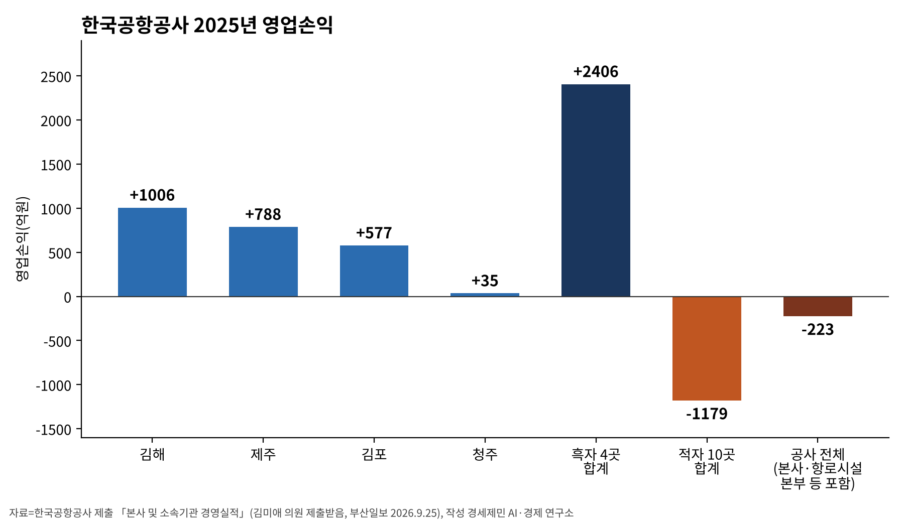
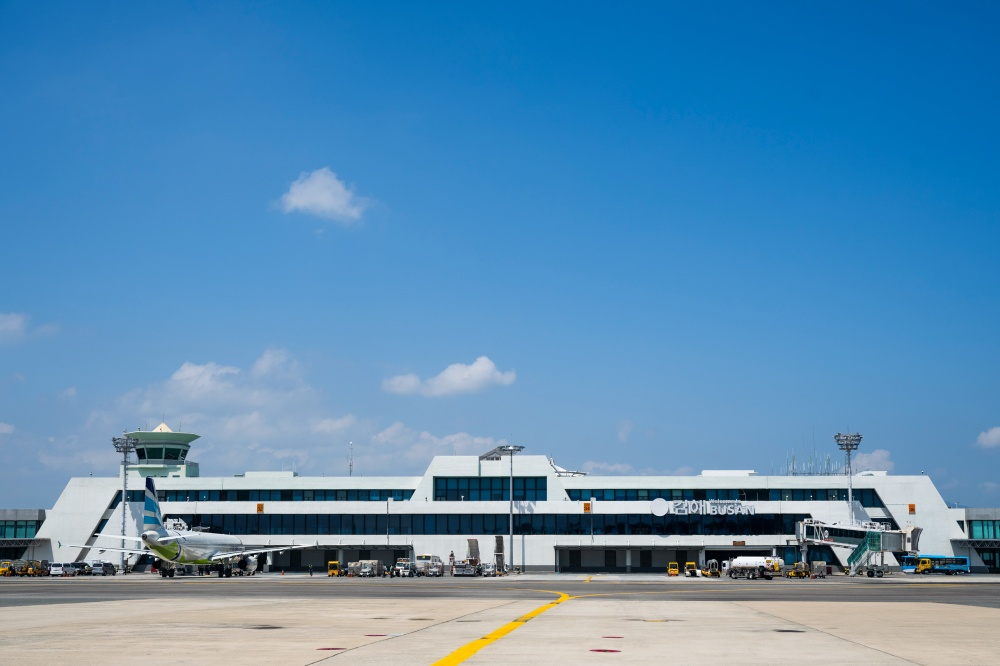

[글로벌 인천공항⑲] 인천·한국공항공사 통합 유보, 지방공항 활성화 뒤 재검토
국토부 정채교 실장 10.22 국감서 통합 현재 안 하기로 결론, 활성화 상황 봐 재검토
한국공항공사 2025년 4곳 영업이익 2406억원, 10곳 영업손실 1179억원
9.3 기능개혁 추진방안, (가칭)공항전략협의회 구성 명시
AI경제저널=김갑봉 기자 | 정채교 국토교통부 항공정책실장은 2026년 10월 22일 국회 국토교통위원회 국정감사에서 "현재는 통합하지 않는 것으로 결론이 나 있는 상태"라고 말했다. "지방공항 활성화 상황을 봐서 재검토하기로 돼 있다"고도 설명했다.
두 공항공사 통합 여부를 묻는 정일영 더불어민주당 의원에게는 "현재로서는 방안에 들어가 있지 않다"고 답했다. 정일영 의원은 지방공항 활성화는 다른 방법으로 해야 한다며 통합 논의가 다시 나오지 않게 해 달라고 요구했다.
황운하 조국혁신당 의원은 두 공사의 재정 여건과 안전관리 수준에 차이가 있다고 지적했다. "외국에는 통합 운영하는 사례도 많다. 다시 재검토해 보라"고 말했다. 뉴스핌이 이날 보도했다.
뉴스핌은 지방공항 활성화를 위한 통합이 필요하다는 주장과 인천공항 재정 부담·경쟁력 약화를 우려하는 의견이 맞섰다고 전했다.
정부 방침, 지방공항 활성화 뒤 통합 여부 재검토
정부는 2026년 9월 3일 제11차 공공기관운영위원회 의결을 거쳐 공공기관 기능개혁 추진방안을 발표했다. 공항공사 대목은 지방공항 활성화 방안을 먼저 마련한다고 적었다. 진행 상황을 점검해 통합 여부를 재검토한다는 내용이다.
추진방안은 (가칭)공항전략협의회를 구성한다고 밝혔다. 국토교통부와 인천국제공항공사, 한국공항공사, 가덕도신공항건설공단 등이 참여한다.
예시로 인천-지방 노선 확대와 지방공항 직항 국제선 확대를 들었다. 두 공항공사 항공보안 업무는 분리해 (가칭)항공보안공단으로 통합한다고 적었다.
한국공항공사 2025년 영업손익, 4곳 흑자 10곳 적자
국민의힘 김미애 의원이 한국공항공사에서 제출받은 「본사 및 소속기관 경영실적」을 보면 2025년 영업이익을 낸 공항은 김해·제주·김포·청주 4곳이다. 합계는 2406억원이다. 부산일보가 2026년 9월 25일 이를 전했다.
공항별로 김해 1006억원, 제주 788억원, 김포 577억원, 청주 35억원이다. 나머지 10개 공항 영업손실은 합계 1179억원으로 전년보다 13.7% 늘었다.
본사와 항로시설본부 등을 합친 한국공항공사 전체는 5년 연속 영업손실을 냈다. 손실은 2021년 2782억원에서 2024년 156억원으로 줄었다가 2025년 223억원으로 늘었다.
김미애 의원은 지방공항이 필요하다면서도 "충분한 수요 검증 없이 공항부터 건설하고 만성적인 운영적자를 반복하는 방식은 지속 가능하지 않다"고 말했다.
"개항 당시 수요예측과 실제 이용객, 투입된 건설비와 운영비를 공항별로 전면 점검해야 한다"고도 했다.

재정경제부는 2026년 5월 28일 2025회계연도 정부배당 실적을 공표했다. 인천국제공항공사 정부배당은 3194억원, 배당성향(당기순이익 대비 배당금 비율)은 46.00%다.
정부출자기관 40곳 중 20곳은 당기순손실 발생과 이월결손금(과거에 쌓인 누적 손실) 보전 등으로 배당하지 못했다. 배당 실적표에 한국공항공사 배당액은 없다.
공항 소유·민영화·위계 선행연구
Oum, Yan, Yu는 2008년 Journal of Urban Economics에서 공항 소유 형태와 비용효율을 분석했다. 세계 주요 공항 패널자료에 확률프런티어분석(stochastic frontier analysis)을 썼다.
연구진은 민영화를 한다면 지분 과반을 민간에 넘겨야 한다고 제시했다. 정부가 과반 지분을 쥔 혼합소유는 100% 정부 소유 공기업보다도 피해야 한다고 했다.
여러 공항이 있는 도시에서 한 곳 이상을 민영화하면 모든 공항의 효율이 오를 것으로 제시했다.
Kim Kwangil은 2025년 9월 한국항공운항학회지에서 공항 위계와 재정지원 연계를 국제 비교했다. EU와 미국 연방항공청은 위계를 정량 기준과 재정 수단에 직접 연결한다고 분석했다.
한국은 법적·정량적 근거 없는 명목 구분에 의존한다고 지적했다. 여객량과 연결성에 따른 5단계 체계와 차등 재정지원을 제안했다.
Lee Gun-young은 2025년 12월 한국항공우주정책·법학회지에서 한국이 일부 공항 민영화를 시도했다고 적었다. 투명성 의심과 이용료 인상 우려로 실제 민영화에 이르지 못했다고 밝혔다.
중앙정부가 개발 예산을 모두 대는 현행 제도는 수요가 많지 않은 지역도 공항을 유치하려는 부작용을 낳을 수 있다고 지적했다. 세 연구 초록은 두 공항공사 통합을 직접 다루지 않는다.
김해 국제선 이용객과 무안 일정
뉴시스는 2026년 7월 8일 한국공항공사 항공포털을 인용해 김해공항 상반기 국제선 청사 이용객이 607만1022명이라고 전했다. 전년 같은 기간 492만7945명보다 23.2% 늘었다.

2019년 상반기 508만860명을 넘어 종전 최고였다. 4월 97만1389명, 5월 97만650명, 6월 91만6421명으로 3개월 연속 월 100만명을 밑돌았다. 국제선 터미널 수용 능력은 연 830만명, 최대 1156만명이다.
국토교통부는 2026년 9월 22일 무안국제공항 활주로 포장 보수·보강 보도참고자료를 냈다. 한국공항공사가 2027년 하반기까지 보수·보강을 마칠 예정이라고 밝혔다.
국토부는 2027년 말을 목표로 광주공항 국내선을 무안공항으로 완전 이전하는 준비를 한다고 밝혔다. 국토부는 재수색이 진행 중인 사고지점의 로컬라이저(착륙 유도 시설) 개선 등 안전확보 조치 후 재개항할 방침이다.
광주공항 국제선 임시 배치는 추진하지 않는다. 자료에 재개항 날짜는 없다.
참고문헌
기관 자료
- 재정경제부(2026). 공공기관 기능개혁 추진방안 발표(관계부처합동 추진방안 첨부). 2026년 9월 3일. 정책브리핑. https://www.korea.kr/briefing/pressReleaseView.do?newsId=156780030
- 재정경제부(2026). 정부출자기관의 2026년 정부배당 2조 7,951억원으로 확정(2026년 정부배당 실적 공표). 2026년 5월 28일 배포. 정책브리핑. https://www.korea.kr/briefing/pressReleaseView.do?newsId=156764271
- 국토교통부(2026). [참고] 무안국제공항 활주로 포장 보수·보강 추진(보도참고자료). 2026년 9월 22일 배포. 정책브리핑. https://www.korea.kr/briefing/pressReleaseView.do?newsId=156782938
연구 보고서와 논문
- Oum, T. H., Yan, J., & Yu, C. (2008). Ownership forms matter for airport efficiency: A stochastic frontier investigation of worldwide airports. Journal of Urban Economics, 64(2), 422-435. https://doi.org/10.1016/j.jue.2008.03.001
- Kim, K. (2025). Airport Hierarchy and Fiscal Support Linkages in International Perspective: Reforming Korea's Airport Framework. Journal of the Korean Society for Aviation and Aeronautics, 33(3), 103-115. https://doi.org/10.12985/ksaa.2025.33.3.103
- Lee, G. (2025). 공항 민영화 운영에 따른 법 정책적 접근에 관한 연구. 한국항공우주정책·법학회지, 40(3), 103-127. https://doi.org/10.31691/kasl40.3.4.
언론 보도
- 정영희(2026). [2026 국감] 국토부 "인국공·공항공사 통합 안 해…지방공항 활성화부터". 뉴스핌, 2026년 10월 22일. https://www.newspim.com/news/view/20261022000951
- 박동해(2026). 김해공항 ‘1000억 흑자’…지방공항 10곳은 5년간 5549억 적자. 부산일보(다음뉴스 게재), 2026년 9월 25일. https://v.daum.net/v/20260925150950842
- 원동화(2026). 김해공항, 올해 3개월 연속 국제선 이용객 100만명 밑돌아. 뉴시스, 2026년 7월 8일. https://mobile.newsis.com/view/NISX20260708_0003701446
사진 출처
- 사진1 김원준 사장 김포공항 현장경영(2026년 9월 4일 게시), 사진2 김해공항 전경(2026년 10월 29일 게시). 한국공항공사 누리집 뉴스·소식 갤러리 사진.
※ 이 기사는 인공지능기자 위민아이(Wemin_AI)와 협력해 작성했습니다.
관련기사
- [글로벌 인천공항⑱] 정일영 의원, 인천공항 5단계 제7차 계획 반영 요구
- [글로벌 인천공항⑰] 인천공항 배당 3194억원, 2011년 매각대금 상임위 삭감
- [글로벌 인천공항⑯] SAF 감면 200편 1740만원, 구매비 지원은 예산안 밖
- [글로벌 인천공항⑮] 해외 항공기 4001대 들인 샤먼, 인천공항 정비도 남의 물량으로
저작권자 © AI경제저널 무단전재 및 재배포, AI학습 및 활용 금지